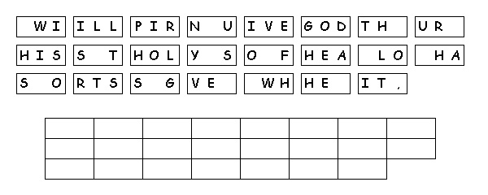

This Week: Proverbs 8:1-4, 22-31, Psalm 8, Romans 5:1-5, John 16:12-15
Elementary School Pew-work
Use the following words to fill in the blanks: peace endure faith Spirit suffer character
By _____________ we have been made acceptable to God. And now, because of our Lord Jesus Christ, we live at _____________with God. Christ has also introduced us to God's undeserved kindness on which we take our stand. So we are happy, as we look forward to sharing in the glory of God. But that's not all! We gladly _____________, because we know that suffering helps us to_____________. And endurance builds_____________, which gives us a hope that will never disappoint us. All of this happens because God has given us the Holy_____________, who fills our hearts with his love.
What
did Jesus do for us?
_______________________________________________________________________
What does
suffering help us to
do?
_______________________________________________________________________
What does
endurance do for
us?
_______________________________________________________________________
What does
character do for us??
_______________________________________________________________________
What special
gift did God give us?
_______________________________________________________________________

Created
by Puzzlemaker
at DiscoverySchool.com
Next
week: 1
Kings 17:8-16, (17-24) and Psalm
146 or 1
Kings 17:17-24 and Psalm
30, Galatians
1:11-24, Luke
7:11-17